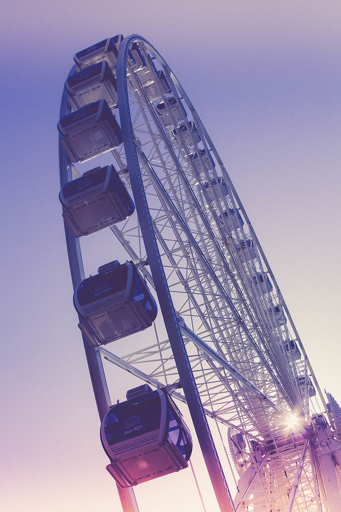

- Seattle great wheel
The Seattle Great Wheel is a 53-meter tall giant Ferris wheel at Pier 57 on Elliott Bay in Seattle, Washington. At an overall height of 175 feet (53.3 m), it was the tallest Ferris wheel on the West Coast of the United States when it opened in June 2012.
Seattle was the third city in North America to offer a wheel of this design, following the Niagara SkyWheel at Clifton Hill, Niagara Falls, Canada (which is also 175 feet (53.3 m) tall), and the larger Myrtle Beach SkyWheel in South Carolina, which stands 187 feet (57.0 m) tall. The Seattle wheel is the only one of the three to be built over water.
The Seattle Great Wheel has 42 climate-controlled gondolas, each able to carry up to eight passengers (except the luxury VIP gondola, which had red leather seats and a glass floor, and seats four), giving a maximum capacity of 332. The 12-minute, three-revolution ride extends 40 feet (12.2 m) out over Elliott Bay.

